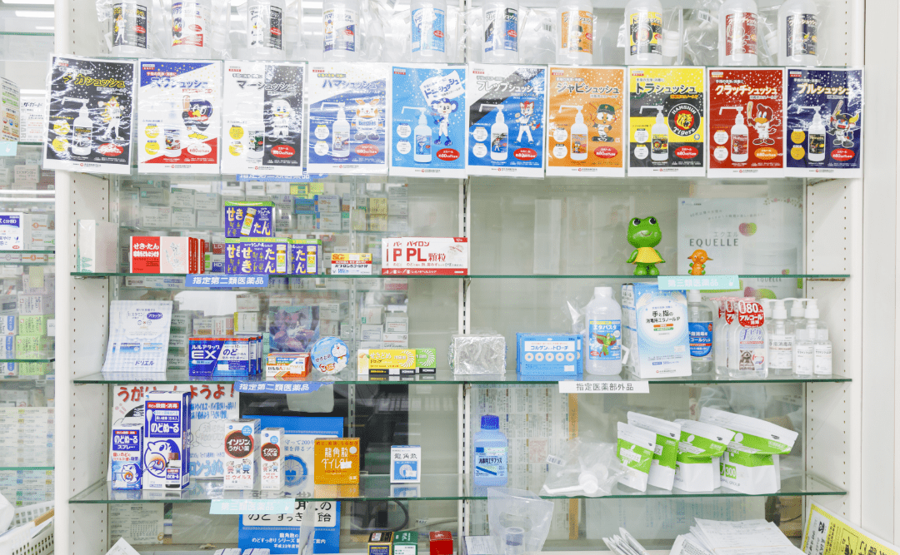

サービス案内
当薬局では、皆様が安心して暮らすため多様化するご要望に全てお応えできるように多角的にサービスを展開しております。
調剤薬局
薬剤師が常駐し医師から出された処方箋に従い、お薬のプロフェッショナルとして処方内容が適切であるかどうかを確認し、正しく服用できるよう調剤と服薬の指導を行います。 常時1,700種以上のお薬を取り揃えておりますので、内科・消化器・循環器・眼科・泌尿器・整形のほぼ全てに対応が可能です。

市販薬販売
医師の処方箋が不要の市販薬も幅広く取り扱っております。昨今、市販薬のレパートリーが爆発的に増加し、最適なお薬選びに悩むことが増えた方もいるかと思います。 そんなお悩みを解消するため、薬剤師の目線にて、症状や体質に適したお薬をご提案いたします。 また、薬剤師が常駐しているので、第1類医薬品に関しても購入頂くことができます。
お薬相談
お薬の飲み合わせや食事やお飲み物のとの飲み合わせ、副作用や保管方法など、疑問に思われる事がありましたら私たちまでご相談ください。 当店でご購入いただいた方でなくても、もちろんご相談をお受けいたします。お電話・店頭、どちらでも構いません。 何か心配になる事がございましたら、お気軽にご連絡ください。
かかりつけ薬剤師
あなたが使用する処方箋、市販薬を一元的且つ継続的に管理することで、薬の重複利用や相互利用を防止します。 一人ひとりの状況や背景に寄り添い、パーソナライズされたアドバイスを送ります。 休日、夜間も窓口が空いておりますので、困ったことがあればお気軽にご相談下さい。
その他
others
お薬手帳について
お薬手帳はお持ちでしょうか？お持ちの方は当店へご来店の際にお持ちください。 お飲みになっているお薬の履歴から、飲み合わせの悪いお薬がないかや、アレルギーなどの情報を見る事ができます。 お持ちでない方は当店にもございますのでお声かけください。

配達
体調面等の問題によって通院が難しい患者様へ向けて、お薬の配達サービスを行っています。配達範囲は市内限定とさせて頂きます。 配達をご希望される方は受け渡し方法等を事前にご相談させて頂きます。 まずはお気軽にお問い合わせ下さい